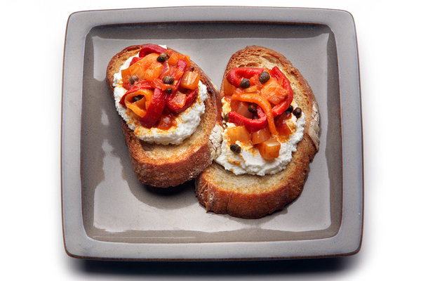

Bruschetta

Brushetta With Ricotta and Peperonata
A tantalizing mixture of crisp basil, fresh tomato, flavorful garlic, capers, and balsamic vinaigrette…served with toast points.
Perfect snack or appetizer!
Ingredients:
- Extra-virgin olive oil
- 6 slices country bread, 1/2-inch thick
- 1 clove garlic, halved 11/2 cups fresh ricotta, drained if necessary, at room temperature
- Kosher salt
- 2 cups peperonata
Steps:
- Make the bruschette: Preheat the oven to 450 degrees. Brush the olive oil evenly over both sides of each slice of bread. Arrange the slices on a baking sheet and toast for 3 to 5 minutes, until golden brown. Flip and toast for 3 minutes. Rub each toasted slice with the cut side of the garlic.
- Taste the ricotta. If it seems bland, mix in a pinch of salt. Divide the ricotta evenly among the bruschette, then top with spoonfuls of peperonata. Serve immediately.